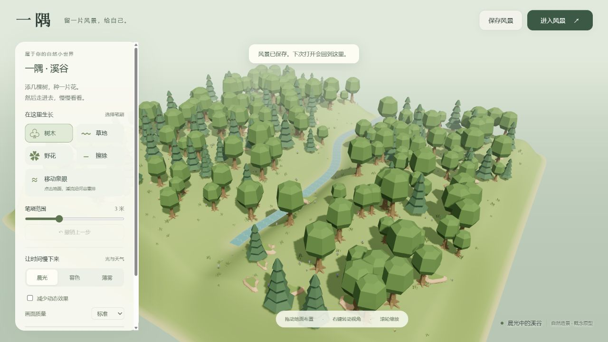
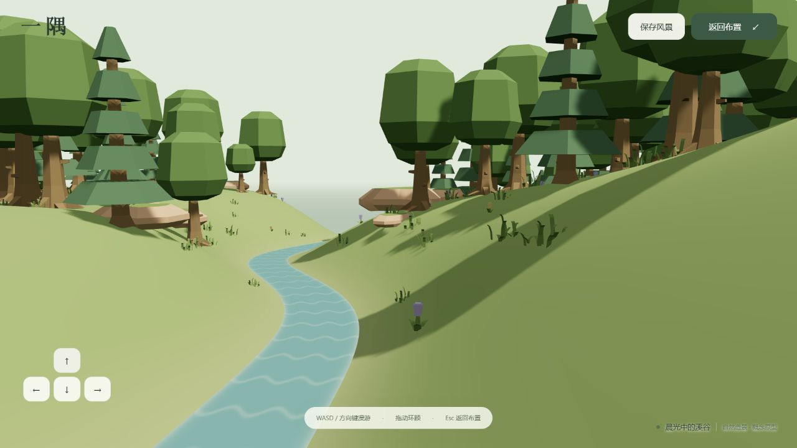

阶段 A · 原型验收报告
研究与首次实现：2026-10-05；本轮收尾验收：2026-10-06（Asia/Shanghai）。验收对象是本项目原创的“一隅”Web 原型，不是 Cozy Country 本体。
已验证布置→进入风景→返回布置→保存→重新打开的核心流程。 自动检查 16 项通过。JSON 内容导出、粘贴导入与文件导入通过；内置浏览器没有回传下载完成事件，因此没有把下载文件落盘记为通过。产品假设仍需真实用户实验。
环境与方法
- Windows 工作区；Node.js 22.15.0、npm 10.9.2；从子项目根执行
npm run dev，访问http://127.0.0.1:8033/。 - Codex 内置 Chromium 浏览器；默认视口 1280×720，另检查 390×844 窄屏后恢复默认尺寸。
- 使用真实界面操作、DOM 中的状态与观察用签名、截图、浏览器控制台及 Node 数据测试交叉检查。没有调用页面内部对象来直接伪造编辑结果。
- 默认种子 20261005，世界 64×64，745 个保存对象。Three.js 0.186.1 与七个 GLB 从本地服务加载；依赖与素材凭据单列保存。
观察签名是序列化数据的 FNV-1a 32 位摘要，只用于对比，不是加密校验。JSON 文件往返后还重新读取界面导出的全部 158,421 字符，确认与原文严格相等。
功能结果
| 目标 | 实际操作与结果 | 状态 |
|---|---|---|
| G01 · 本地启动 | HTTP 服务启动；实际地形、GLB、流水 Shader 和控制面板显示；最终标签页控制台 error/warn 均为空 | 通过 |
| G02 · 自然画面 | 树、草、花、岩石为七个真实 Kenney 模型；统一材质与配色，晨光／暮色／薄雾切换可见 | 通过，截图见下 |
| G03 · 编辑与撤销 | 树木点击：745→749，撤销回 745；草地：745→763；野花：763→776；擦除后 740，撤销恢复 776，再逐步撤销回初始世界 | 通过 |
| G04 · 泉眼与路径 | 点击移动泉眼，地形和河面重新生成；撤销恢复原泉眼。96 点数据路径下降与地形匹配由测试覆盖；渲染增加到岸边的两点过渡 | 通过阶段 A；没有积水模拟 |
| G05 · 创作／探索 | 实际进入安全落点；连续点击向前三次，相机从 [6.64, 6.19, 10.33] 到 [6.46, 5.95, 8.54]；拖动环顾，Esc 返回编辑，相机恢复 [32, 38, 49] | 通过；舒适度未做用户测评 |
| G06 · 保存／恢复 | 保存后改变环境，恢复旧世界；刷新页面自动恢复。世界签名均为 fdd7409a | 通过 |
| G07 · JSON | 导出窗口提供完整 JSON；粘贴和真实文件导入均恢复同签名、745 对象。再次导出的完整文本相等；version 99 坏输入显示错误并保留当前世界 | 内容与导入通过；下载落盘未确认 |
| G08 · 环境与运行 | 减少动态后水纹时间连续两次观察均为 92.447；轻量质量关闭阴影并降低地形细分；三种环境可切换；窄屏工具可收起、无水平溢出 | 本轮检查通过；真实设备性能未测 |
保存失败、恶意存档、越界数值与对象过量由数据测试检查；未在浏览器中人为填满用户磁盘或清空浏览器数据。连续键盘按住及手机双指手势未单独完成硬件测试，不能从按钮行走与窄屏截图推导出这些结果。
自动检查
在子项目根运行 npm test：16 / 16 通过。
| 模块 | 检查重点 | 数量 |
|---|---|---|
| world | 同种子确定性、河道与河谷匹配、地形有限范围、笔刷上限与 ID、非法导入与访问器／原型键拒绝 | 6 |
| storage | 保存与加载往返、先校验后写入、Quota/SecurityError、损坏 envelope／日期／版本、恶意字段 | 5 |
| walk | 隐藏物件不碰撞、岸边与碰撞范围、默认出生点石头回归、全岛备用落点／无落点失败、斜向速度归一 | 5 |
node --check demo/app.js 与 node --check demo/scene.js 通过。浏览器实际编译并呈现水 Shader；最终无 Shader 编译错误。目录登记与文档链接检查结果由 过程记录补充。
实际画面


390×844 窄屏截图。这些都是本轮浏览器实际捕获的原创原型画面。它采用低多边形模型、有限岛屿和路径流水；与参考产品的草木密度、河流细节及世界尺度存在预期差异，没有声称像素级复刻。

运行观察与限制
默认质量的一次界面检查记录：745 个保存对象，29 个 draw calls、244,692 个渲染三角形；轻量模式观察为 16 个 draw calls、120,140 个三角形。三角形计数包含阴影等渲染通道，不等于独立模型几何数量。
最终一次混合操作记录有 2,670 个样本，平均 requestAnimationFrame 间隔约 13.66 ms、最大约 295.60 ms。该记录混入视口调整与界面操作，未隔离 GPU 耗时、未采集设备硬件、未做重复基准，所以只是诊断，不能据此宣称稳定帧率、低端设备性能或移动端可用性。此前泉眼重建也观察到瞬时停顿，后续应分块更新地形。
两个下载完成事件检查均在 10 秒超时；界面因此提供可查看／复制的完整内容及明确的下载发起提示。没有证据断言所有浏览器都会下载失败，也没有证据断言文件已成功落盘。普通浏览器文件下载需另行复查。
当前相机贴合高度场，用树干与岩石的简化圆形范围阻挡；没有完整物理碰撞、坡度限制、游泳或水深阻挡。原型没有声音、植被风、拍照系统、账号或云同步。上述范围与阶段 B 的积水改流实验及用户验证分开记录。
H01–H04（快速成景、主动探索、停留、回访）均为待验证假设。功能验收不是留存或付费证明。
扩展计划网页关联检查
2026-10-06 新增演示顶部“扩展计划”入口，关联十份文档的静态阅读页面。本节验证文档入口与网页一致性，不改变阶段 A 的视觉质量结论，扩展方案仍未实施。
- 浏览器实际打开目标与验收、过程记录、实现方式、验证报告、扩展计划，页面标题与正文对应；返回演示入口可用。
- 演示计划链接使用新窗口目标，点击后演示 URL 保持不变；已有未保存演示标签页未刷新、未改写存档。
- 390×844 视口下，演示三个顶部入口的右端分别约 179、254、372 像素，均在视口内；文档页面内容宽度 375 像素，未超过视口，十个文档导航入口可见。此项为桌面浏览器窄视口检查，不代表真实手机性能验证。
- 十份生成文档的本地文件引用与章节锚点检查通过，check:research 报告与源文档一致；总目录包含计划链接和对应静态页面。
- 既有原型测试 16 项、总目录测试 17 项通过。Pages 与提交检查流程加入文档构建／一致性校验；在这次文档关联检查时没有运行线上部署，后续发布见过程记录。